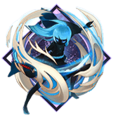
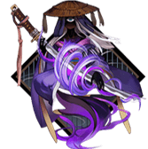

いばらきどうじ
cv. 福山润
十分強大的妖怪
一隻手臂被鬼切砍下
一直追逐著酒吞童子
對他來說
酒吞童子既是唯一的友人
也是他心目中最欣賞的男人
但酒吞童子卻對他的示好毫不在意
不知他何時
才能再次和酒吞童子一起
在那森林中，對酒當歌，如同往昔
式神介紹
故事
茨木童子出生於攝津國茨木村的一戶農家，是其母親經過十六個月懷胎才生下來的。他一出生就長有
滿口的牙齒，還衝著母親發出「咯咯咯」的笑聲，母親當場就被嚇得暈過去了。後來父親給茨木童子
請了一位奶媽，可是茨木童子一含住奶媽的乳頭，就一口氣將她的奶水全部吸干，導致奶媽的兩個乳
房全癟了下去。這些怪事一傳出去以後，整個茨木村的人都把茨木童子當成妖怪，稱呼他為「鬼孩子
」。父母也不敢繼續撫養這個孩子，隨便找了一處地方將他丟棄。
遭到丟棄的茨木童子隨後被一對理髮夫妻撿到，二人膝下無子，所以相信這個孩子是上天給他們的恩
賜，將他帶回家當成親生兒子一樣養育。茨木童子長大以後，養父教會了茨木童子如何理髮。
起先茨木童子幹活十分規矩，手藝也不錯，受到養父和客人的一致讚許。然而，有一次在給客人理頭
髮的時候，茨木童子一不留神劃傷了客人的頭皮。傷口太淺，沒有引起客人的注意。但是茨木童子一
聞到滲出來的鮮血的味道，心靈深處某種奇怪的衝動被喚醒了，他用手指輕輕的沾了一點客人的血液
放進嘴裡，竟然仿佛嘗到了人間美味。從此茨木童子著魔般的渴望人血，每次有客人來找他剃頭，他
總是偷偷的割傷客人的頭皮，舔舐他們的血液。漸漸的越來越多的客人感到不滿，互相轉告不要來這
家店剃頭。
終於，養父也察覺到了茨木童子這個惡劣的喜好，嚴厲的斥責茨木童子。茨木童子感到非常傷心，一
個人跑到了河邊哭泣。這時候，他在河水中看見了自己的倒影，發現自己不知不覺中已經變成了一副
鬼模樣了。他又想到自己的天性畢竟融入不了人類的社會，索性放棄掙扎，做一隻鬼算了。於是，茨
木童子離開了家，踏上了作為妖怪的道路，後來輾轉來到了丹波國的大江山，投靠了酒吞童子。
茨木童子投靠酒吞童子之後，經常來到京城裡搶劫。天黑以後，他會幻化成少女的模樣，徘徊在羅城
門附近，引誘經過的男人。一天深夜，源賴光的家臣渡邊綱辦完差事，從外地回到京城。他就是上回
提到的跟隨賴光前去征討酒吞童子的「四大天王」之一，不過那是後話了。
茨木童子投靠酒吞童子之後，經常來到京城裡搶劫。天黑以後，他會幻化成少女的模樣，徘徊在羅城
門附近，引誘經過的男人。一天深夜，源賴光的家臣渡邊綱辦完差事，從外地回到京城。他就是上回
提到的跟隨賴光前去征討酒吞童子的「四大天王」之一，不過那是後話了。
當渡邊綱經過羅城門時，看見茨木童子幻化的少女正獨自走在路上，覺得好生奇怪，便上前詢問。少
女謊稱自己剛剛搬到京城的五條渡口，由於還不熟識道路，結果迷路了，才會大半夜的還在街上遊蕩
。渡邊綱非常有風度的提出要護送少女回家。於是二人一起向五條渡口前進。就在快要到達五條渡口
時，茨木童子突然伸出手抓住渡邊綱的髮髻，想要結果了他的性命。然而，渡邊綱不愧為「四大天王
」之一，非但沒有被突如其來的襲擊嚇得失去方寸，反而拔出佩刀，以迅雷不及掩耳的速度反擊，砍
掉了茨木童子一條手臂。茨木童子自知不是渡邊綱的對手，遂逃往了愛宕山。
渡邊綱當時用來砍傷茨木童子的太刀，是賴光賜給他的「髭切」，經由此事改名叫做「鬼切」。不過
名號遠不及後來斬殺酒吞童子的童子切安綱來得響亮。
推薦御魂

4破勢+2攻擊/暴擊
攻攻暴
茨木御魂首推破勢，二三技能配合破勢效果，刷圖時可以一個技能秒一片，刷狗糧必備，鬥技時傷害
也相當可怕。

3暴擊套
攻攻暴
在破勢沒滿暴的情況下，可以用2+2+2的暴擊散件套，將暴擊堆到100%，如果暴擊溢出，可以考慮將
一套換成攻擊套，6號位依然是暴擊傷害。